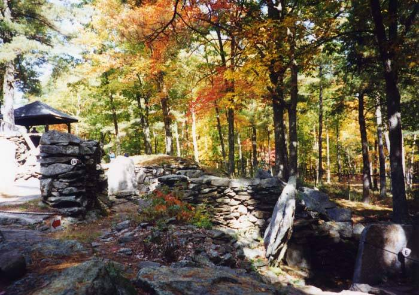

Mystery Hill ("America's Stonehenge")
Salem, New Hampshire

A maze of stone walls, chambers, and a large grooved "sacrificial table" promoted since the 1930s as a pre-Columbian or even ancient European site with astronomical alignments. DISPUTED: archaeologists generally attribute the structures to 18th- and 19th-century farmers, with later rearrangement by enthusiasts. 1
Open in the interactive Watcher
Sources
- America's Stonehenge Wikipedia